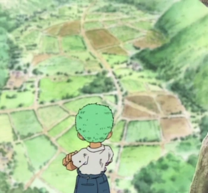
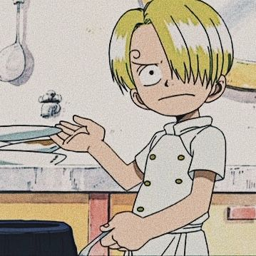

Mano Derecha e Izquierda del Rey de los Piratas
Son la base del poder del Rey de los Piratas.
Tambien conocida como sus alas
El Espadachin mas Fuerte del Mundo
Originario del east blue, Zoro creció en el pueblo de Shimotsuki, donde se entrenó como espadachín con el sueño de convertirse en el mejor del mundo. Antes de unirse a Luffy, era un cazarrecompensas conocido como el "Cazador de Piratas". Su determinación y habilidades con las espadas lo han convertido en el combatiente más confiable de los Mugiwara. 🗡️🌊 de los mares mas subestimados en toda la historia
East Blue
El Mejor Cocinero de todos los Mares
Nacido en el North blue, Sanji creció en el Barco Restaurante Orbit, donde aprendió a cocinar bajo la tutela del chef Zeff. Especializado en la cocina de alta calidad y el combate con patadas, Sanji se unió a los Mugiwara para perseguir su sueño de encontrar el legendario All Blue. Su pasión por la cocina y su caballerosidad lo hacen indispensable en la tripulación. 👨🍳🔥
East Blue